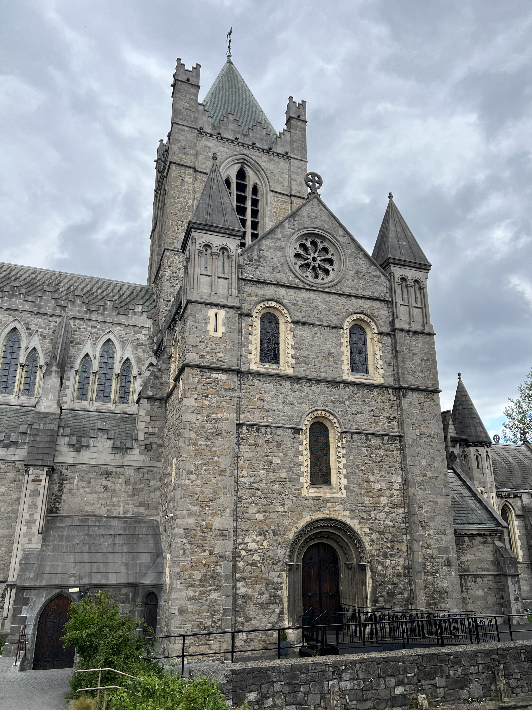
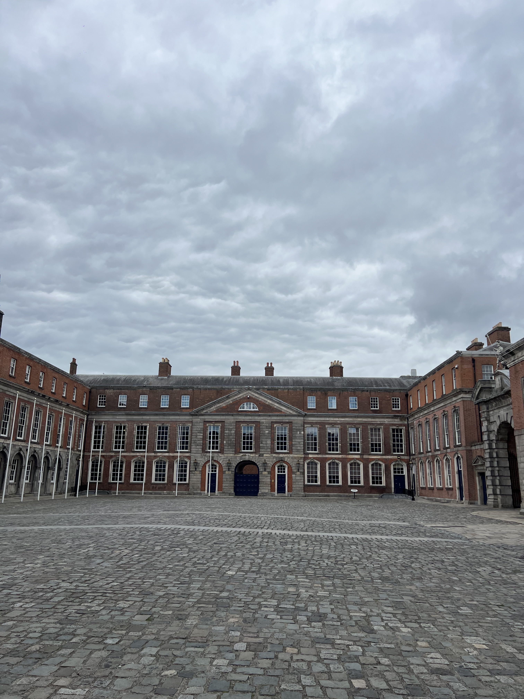
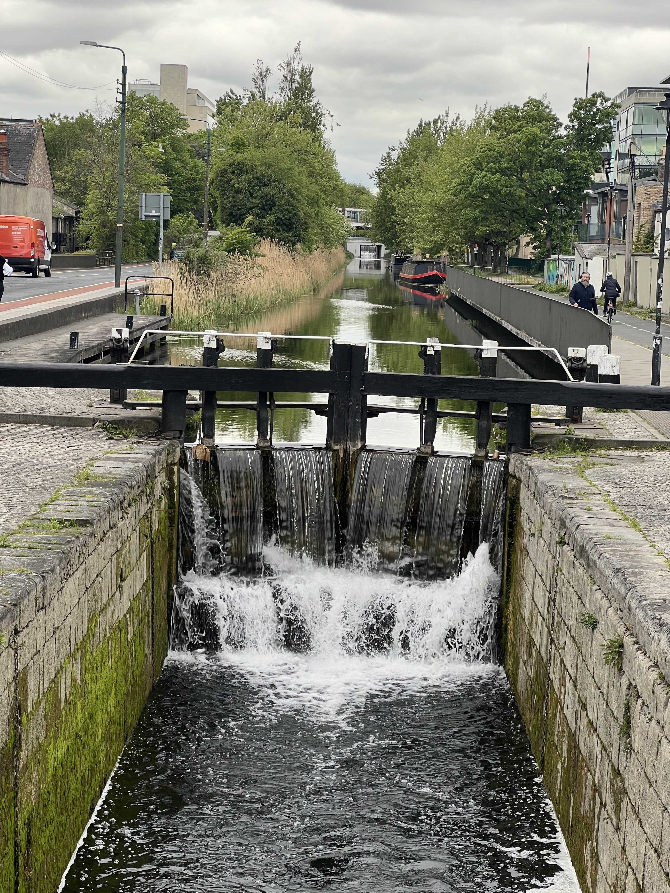
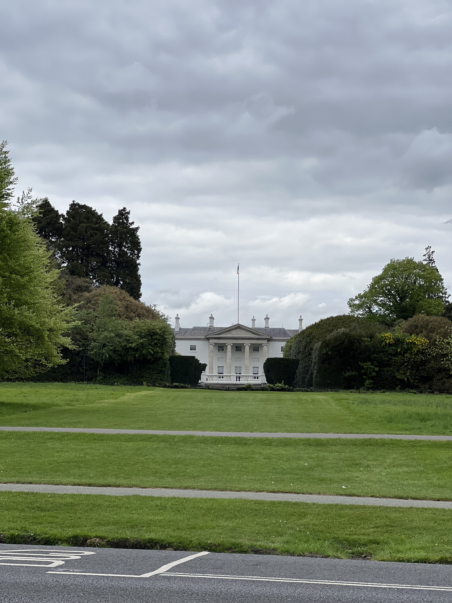
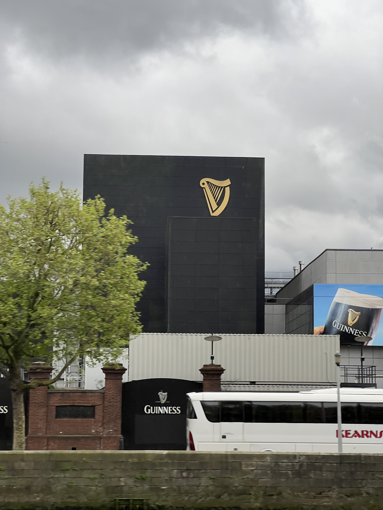
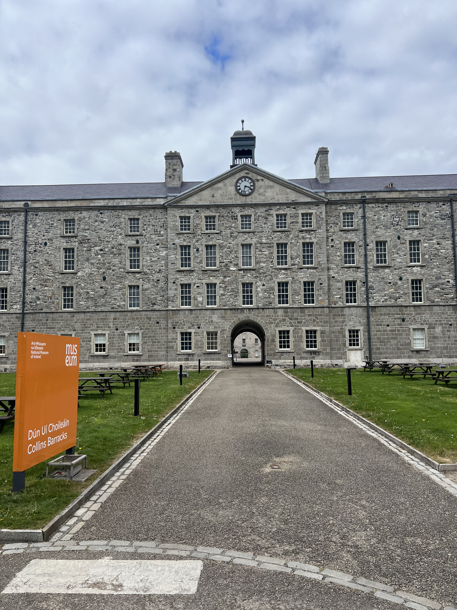
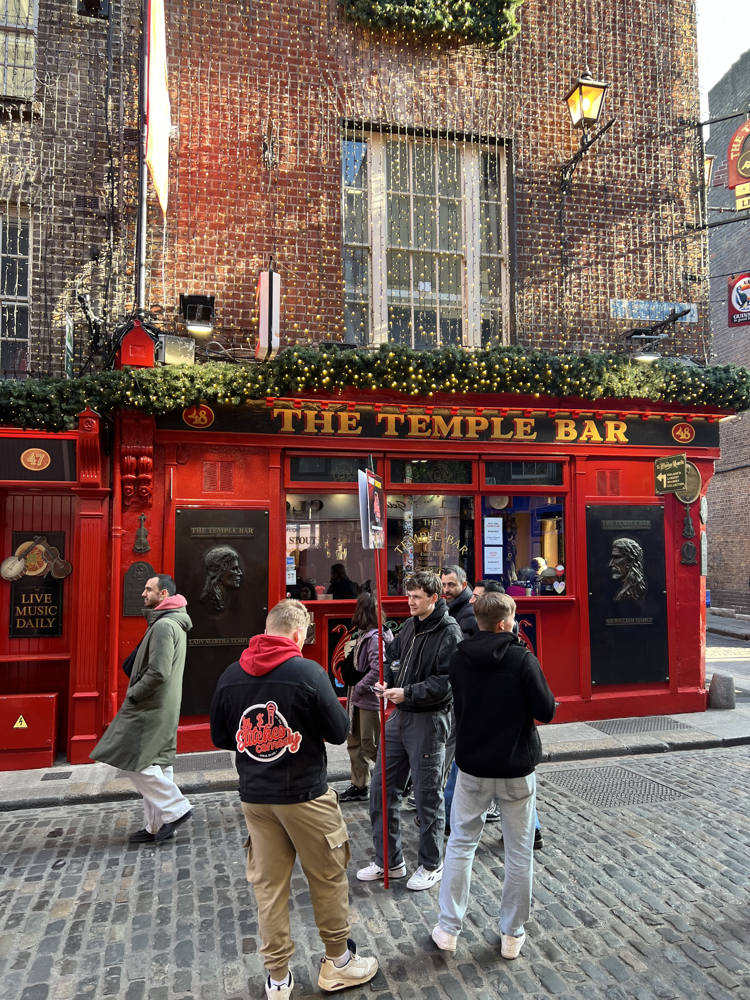
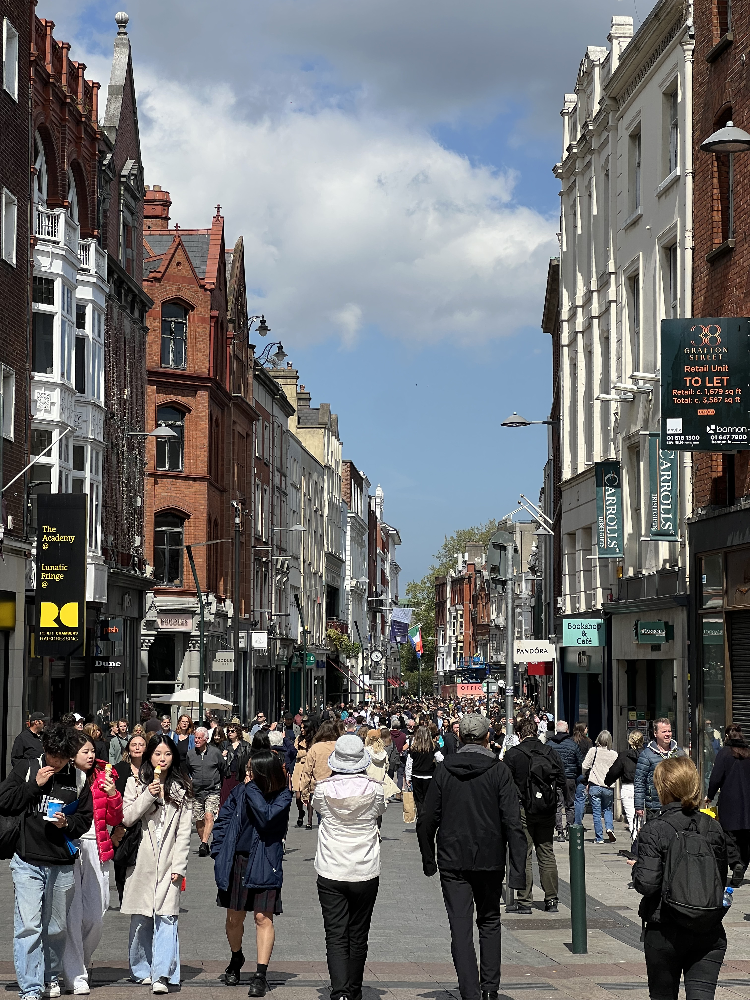

Ireland — Grid Gallery
Style this .grid with display: grid and
repeat(auto-fill, minmax(220px, 1fr)) in styles.css.










About this site
This is a class assignment. Replace this paragraph with a short blurb about your trip and what kind of accessibility considerations you put into the design.